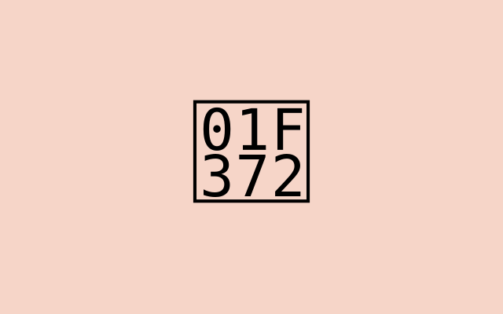
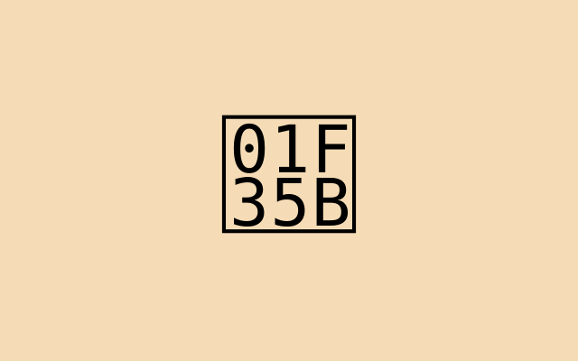
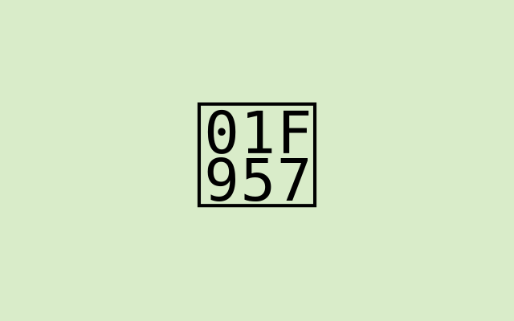
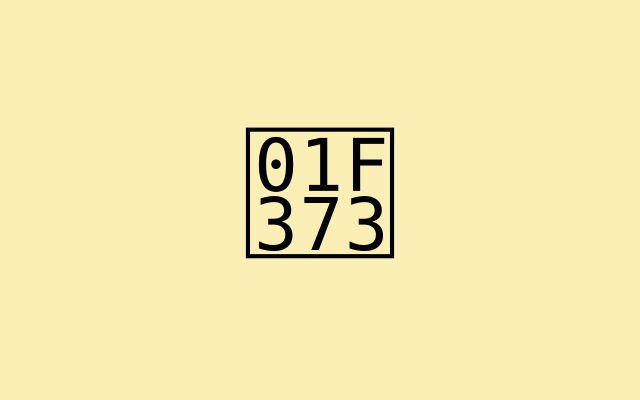
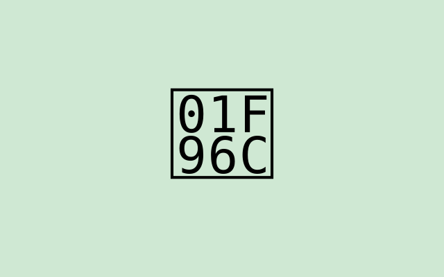

Борщ
Классический борщ на говяжьем бульоне со свёклой, капустой и сметаной. Насыщенный вкус и яркий цвет.
Перетащите нужные в область справа (на телефоне — двойной тап)

Классический борщ на говяжьем бульоне со свёклой, капустой и сметаной. Насыщенный вкус и яркий цвет.

Тонкие ажурные блины на молоке. Подходят и с вареньем, и со сметаной, и с мясной начинкой.

Рассыпчатый плов с говядиной, морковью и луком. Готовится в казане на медленном огне.

Освежающий холодный суп с овощами и яйцом. Идеален в жаркий день.
Домашние пельмени с мясной начинкой и тонким тестом. Лепить лучше всей семьёй.

Воздушный омлет на молоке за 10 минут. Простой завтрак на каждый день.

Нежные голубцы в капустных листьях с мясом и рисом, томлёные в сметанном соусе.

Румяные сырники с хрустящей корочкой и нежной серединой. Подавать со сметаной.
Рецептов с такими ингредиентами не найдено